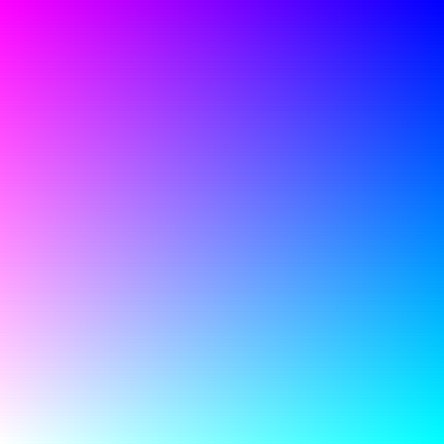
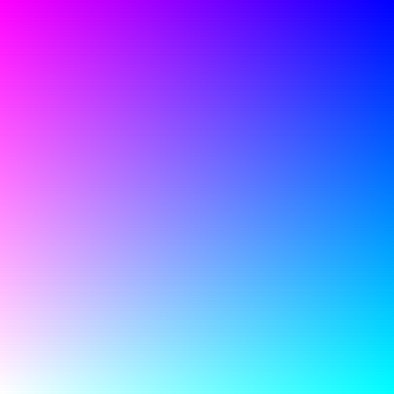

Switch space quarters iteratively
Motivations of a glsl experiment
I asked myself how to randomly sort the tessellation of a glsl shader. Thinking about that problem, I ran into a slightly different problem: the challenge was to subdivide the canvas in quarters and then switch the top-left quarter with the bottom-right, and the top-right quarter with the bottom-left. Observable notebook at https://observablehq.com/@riccardoscalco/switch-space-quarters-iteratively.
The solution was pretty easy: mapping each point q to
mod((q - (.5, .5), 1).
The mod function computes the value of one parameter
modulo another,
see the reference pages.
We can go further and repeat the same procedure for each quarter. For example, take the (new) top-left quarter, subdivide it in quarters (each is 1/16 of the whole area) and switch the top-left with the bottom-right and the top-right with the bottom-left. Do that for each of the four 1/4-quarters.
Then repeat the procedure for each of the 1/16-quarters, then for each of the 1/32-quarters and so on... Of course, the iteration can be infinite but, at a certain point, we start to move around pixels.
 

N = 0 to N = 7. Note that for large N
the image recovers the original appearance but it results rotated
of 180 degrees. At that point, any new iteration moves portions of
the area smaller than pixels.
Let's look at the code implementation
The most interesting part of the fragment shader is the function
g(q, v) = mod(q - v * (.5, .5), v) + floor(q / v) * v.
That function is called at each iteration and applied to the result
of the previous iteration.
The resulting function applied to the point coordinate
q after each iteration is:
Note that the output vec2 value of each iteration is
the input coordinate of the next iteration.
- 1 iteration:
g(q, 1/1) - 2 iterations:
g(g(q, 1/1), 1/2) - 3 iterations:
g(g(g(q, 1/1), 1/2), 1/4) - ...
The block of GLSL code below defines the function g and
the function field resulting after 3 iterations.
vec2 g (vec2 st, float v) {
return mod(
(st - v * vec2(0.5, 0.5)),
v
) + floor(st / v) * v;
}
vec2 field (vec2 st) {
vec2 f = st;
for (float i = 0.; i < 3.; i += 1.) {
f = g(f, 1. / pow(2., i));
}
return f;
}
Eventually, we can use the function field to assign the
value at the gl_FragColor variable.
void main() {
vec3 color = vec3(field(st), 1.);
gl_FragColor = vec4(color, 1.0);
}